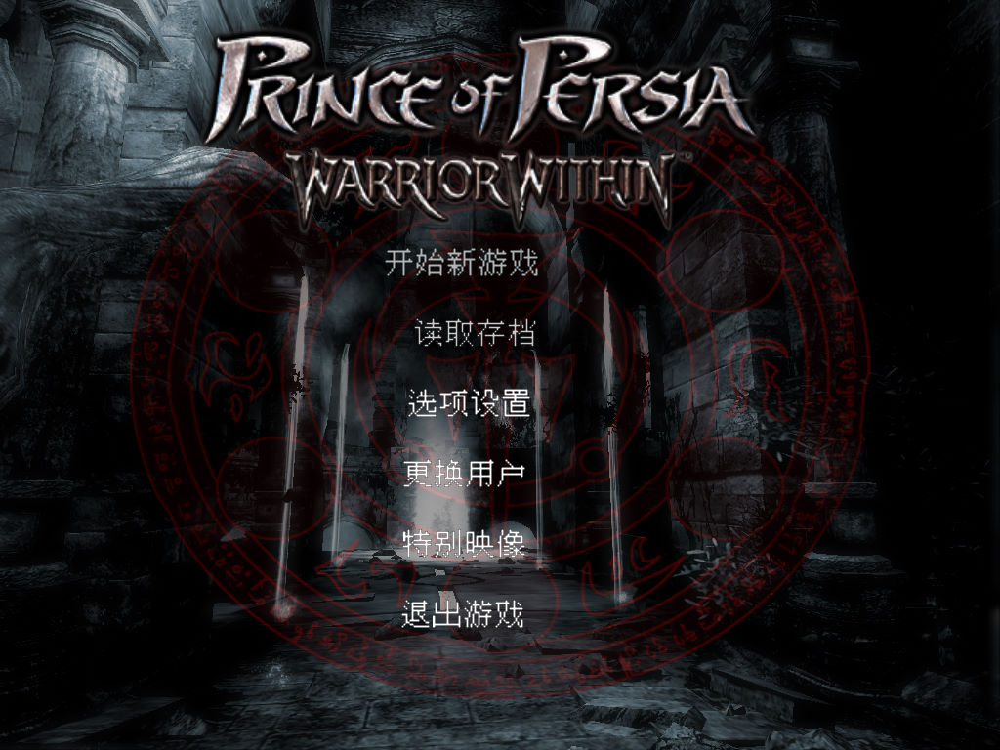
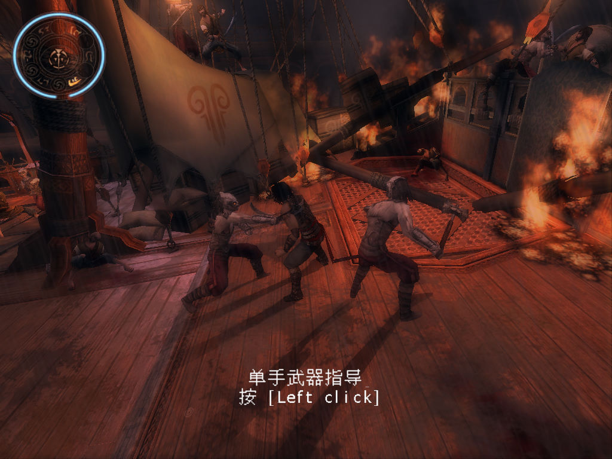

名稱：波斯王子2：侍魂無雙／武者之心 (Prince of Persia: Warrior Within，簡中／英文版) 簡介：Ubisoft 2004年出品的動作冒險遊戲 [待補]。

保護：原始CD版為光碟SafeDisc 4.00，DVD版已去除SafeDisc保護 備註：進入遊戲後，若發現主畫面幾乎同色一片，看不清物體，請到Options-Graphics，將 FOG選項調成OFF。 檔案：nocd.rar = 免光碟檔 POP2WW_CHS.rar = 簡中漢化檔（會被報毒，請自行斟酌）